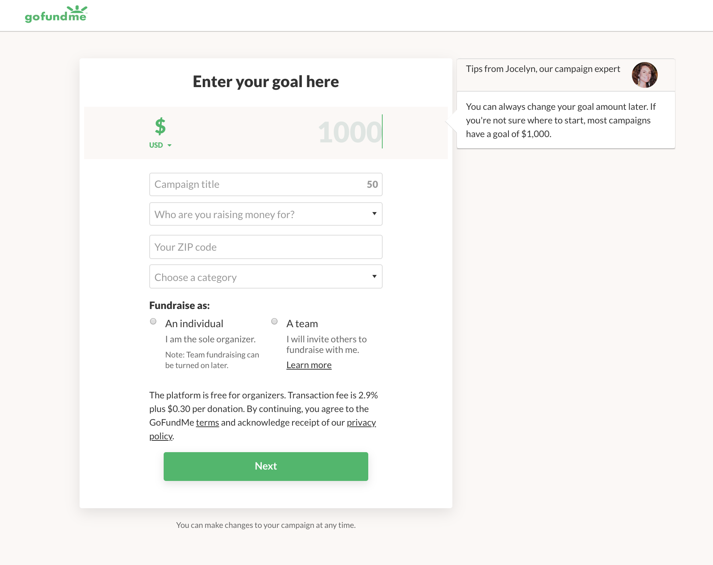
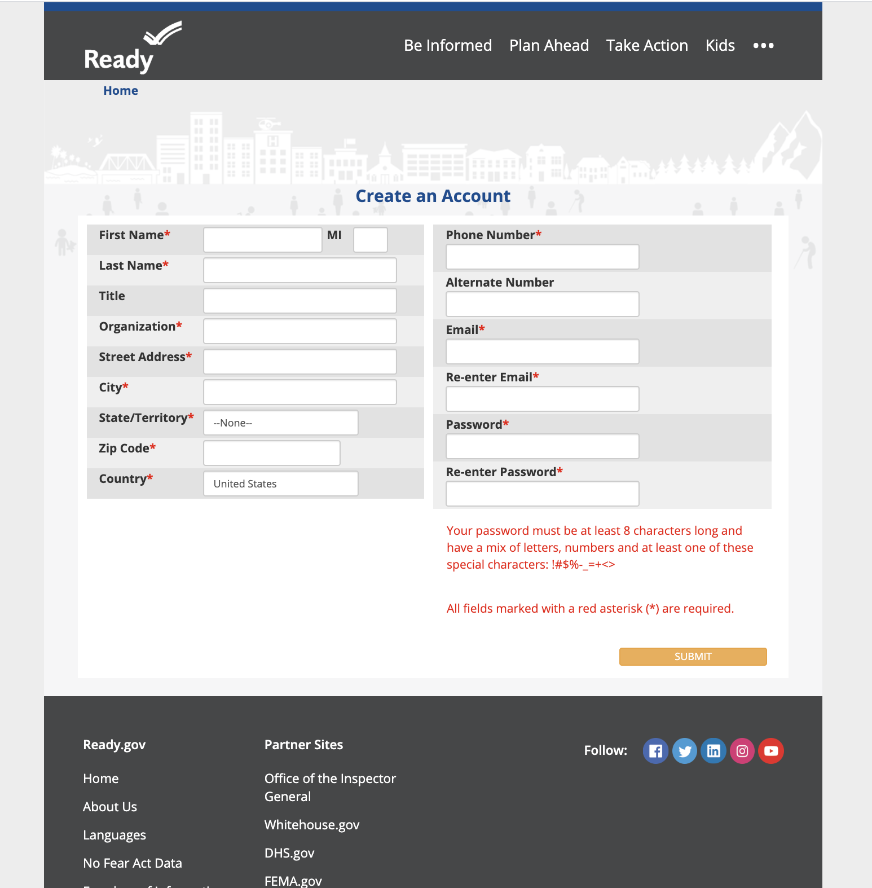
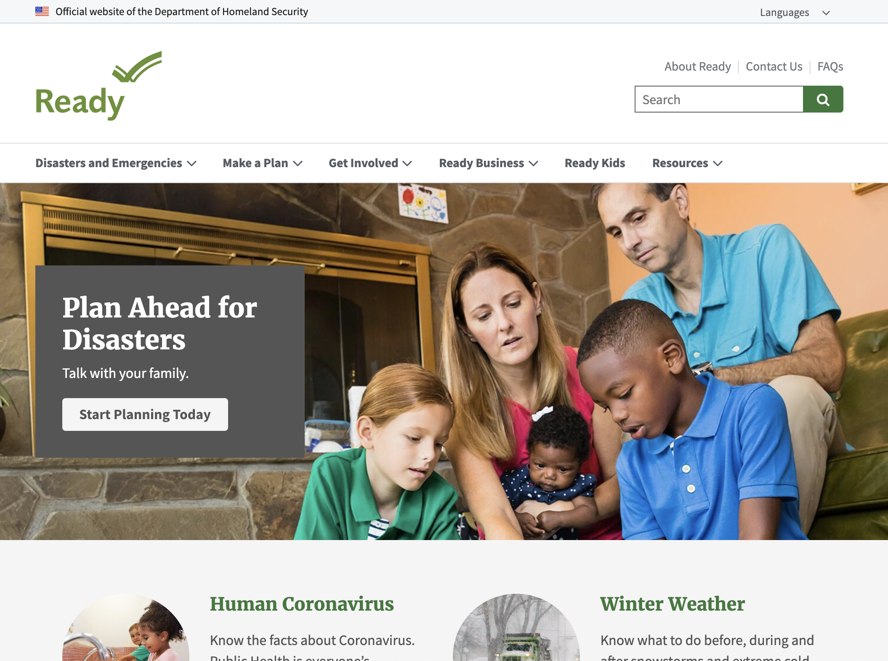
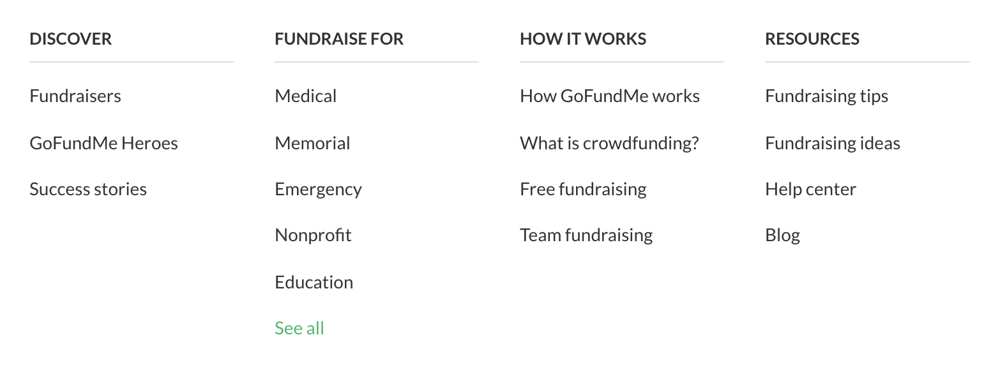
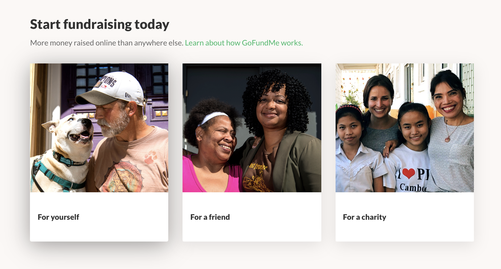
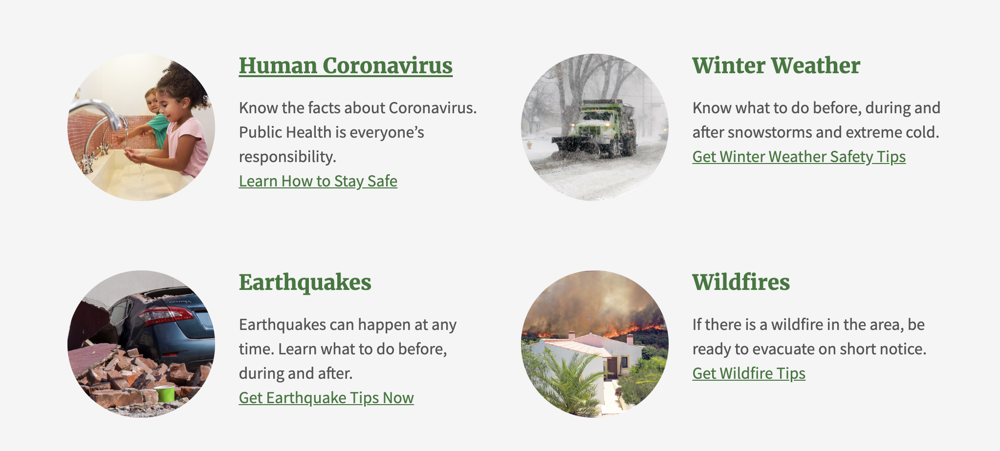

←
Interaction Design Comparative Research
Collecting Info from Users - Forms
GoFundMe's Get Started Form Page VS. Ready's Sign-Up Page

(Above) GoFundMe's Get Started Form Page

(Above) Ready's Sign-Up Page
Disclaimer: Since these sites serve different purposes within the communities, there are subtle differences.
GoFundMe is used as a fundraiser platform for a broad range of different needs, whereas Ready is used as a platform for users to volunteer in helping out local communities with natural disasters. GoFundMe's page is asking users what their intentions are and with an already known intention, Ready asks users more personal information in order to get involved. Both platforms keep it simple and straightforward; however, Ready has a design that seems outdated in comparison to GoFundMe. Its colors shout "Government" with the use of blues and a greyscale color palette. In addition, the design looks very outdated in comparison to GoFundMe's which is a lot more inviting (e.g. color palette has greens, beiges, etc. with a clear typography hierarchy and a detailed, yet clean layout). Although Ready does have a particular tone that is related to government means, it makes sense to have the colors the way they are; however, the design could be drastically improved to engage users.
Limitation of Content to Present to Users
GoFundMe's Homepage vs. Ready's Homepage
 (Above) GoFundMe's Homepage
(Above) GoFundMe's Homepage

(Above) Ready's Homepage
GoFundMe's Homepage and Ready's Homepage have an effective call to action to catch the user's attention and a picture that captures what their intended goal is for their users to do. In addition, there are indications that the page continues since some material is semi-revealed below the hero image. The one issue that seems to be with Ready's Homepage is that it isn't as personal as GoFundMe since it seems that there are more cases where people are engaging with others through pictures and through short descriptions that describe GoFundMe's benefits. Ready could increase their user engagement by adding real events. This will increase engagement and positive reinforcement.
The power of choice
GoFundMe's Nav vs. Ready's Nav

(Above) GoFundMe's Nav
(Above) Ready's Nav
GoFundMe's Navigation Bar and Ready's Navigation Bar gives the user the power to choose where they want to go. The only major difference is the layout (e.g. how easy it is to access what they want). Ready's search bar is troublesome since it doesn't provide the autocomplete feature that GoFundMe's search bar contains, although GoFundMe only allow location searches which isn't as helpful either for their autocomplete feature. One good thing that GoFundMe does is that they include a "see all" option to condense the large amount of information they have for the "Fundraise For" tab. On the other hand, Ready's navigation bar for "Disasters and Emergencies" really is what the description says. The amount of information runs off the homepage entirely where you'd have to scroll down and it's also quite overwhelming for users to read the stacks of words. In addition, it doesn't seem as warm and welcoming to users to want to use the website. An effective way would be to create a separate page altogether that features each option just like GoFundMe.
Functionality and Interface Design
GoFundMe's Interface vs. Ready's Interface

(Above) GoFundMe's Interface Feature

(Above) Ready's Interface Feature
GoFundMe's site has pretty good interaction. When the user wants to find out more information on the pictures, it shows a response with a shadow on the behind the picture. Ready also has a decent interaction feature with the text being underlined to indicate that it's a link to somewhere else. The one downside to both sites is that in some areas, there isn't strong enough UI navigation. For example, GoFundMe's "Top Fundraisers" category doesn't highlight its clickable content. Ready's call to action button also doesn't have any sort of UI change to it whatsoever. There can be many improvements to both sites to provide a more memorable experience to allow users to understand where they're at on a page or what they're able to access. For example, they both could utilize features where when pictures are hovered on a shadow appears behind it (like GoFundMe's), change the color when hovered, or maybe enlarge the image so that it pops up in front of people.